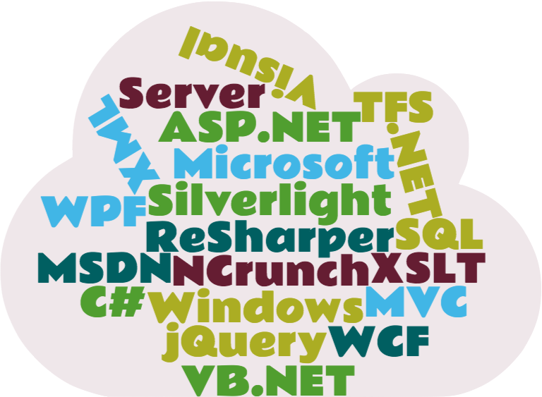
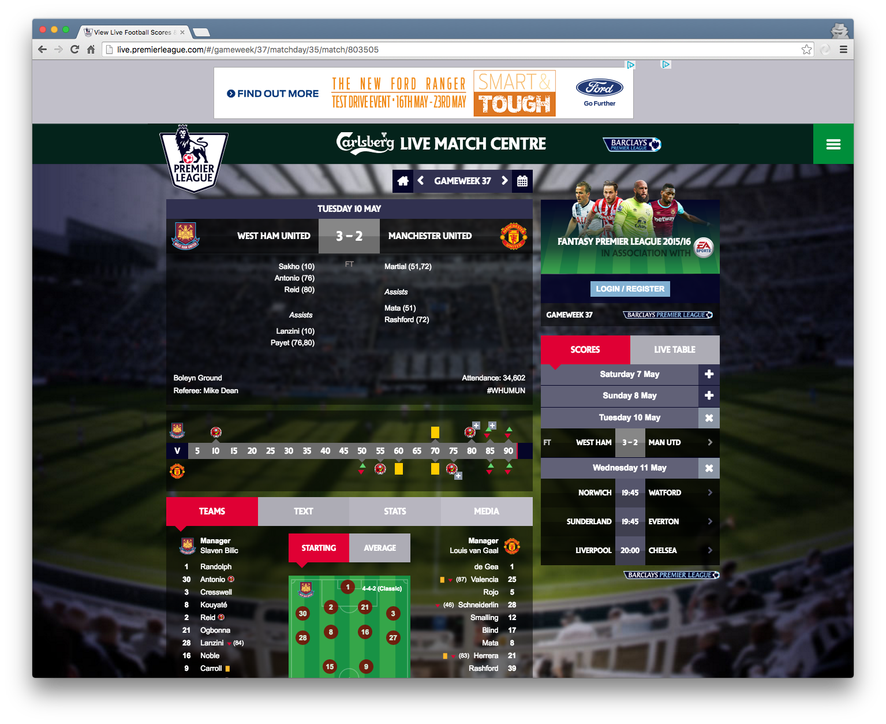
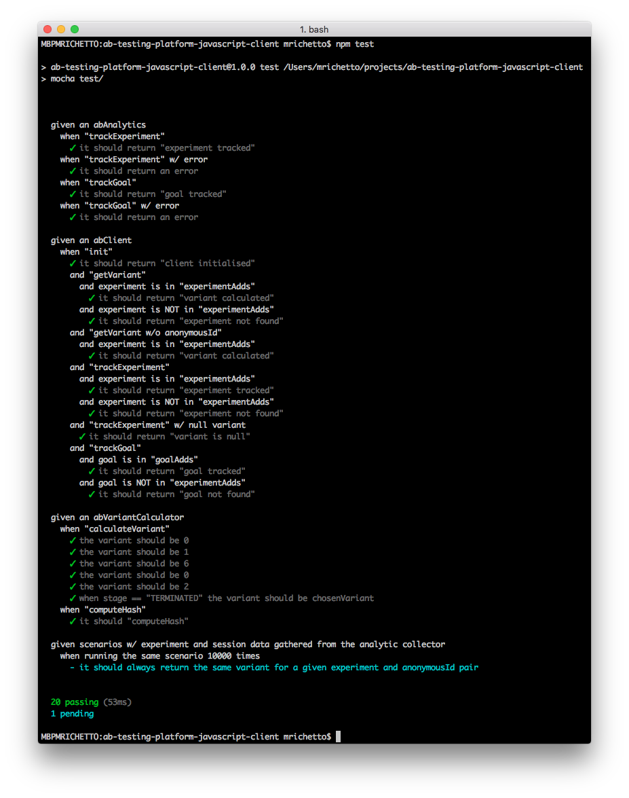
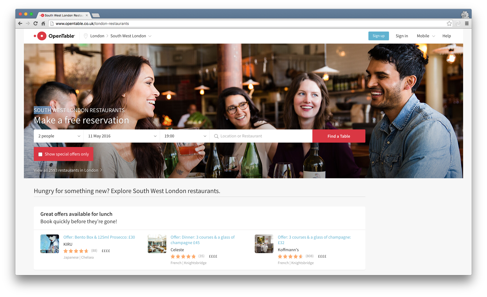
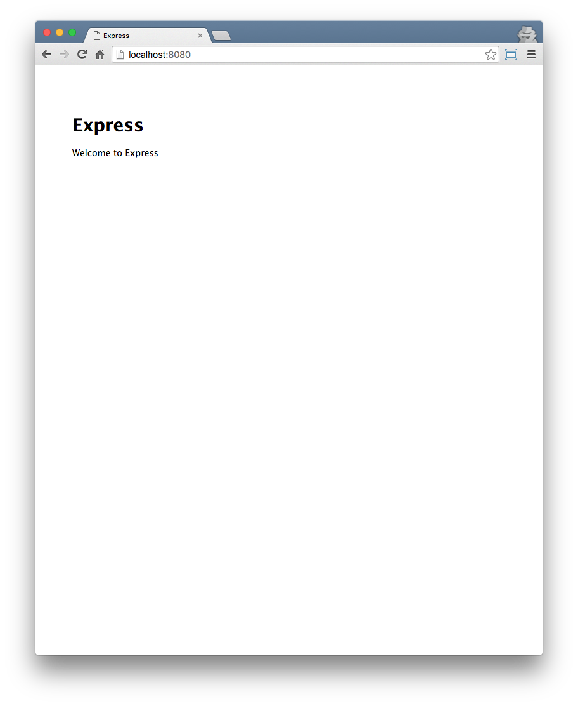
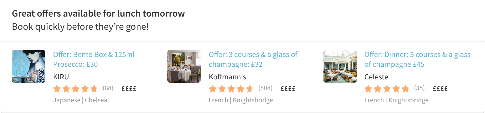

Node.js from the trenches
My experience at OpenTable
@mattiaerreAgenda
- Who I am and what I do
- Of JavaScript & ...
- OpenTable
- Node.js
- Demo(s)
- Takeaways
Who I am and what I do
- Mattia Richetto (@mattiaerre)
- I Live in London (since 2013)
- I work for

- I am a Sr. Software Engineer - Team lead
- I am an Agile developer
OfJS & me (Part I)
OfJS & the rest of the world
JavaScript is the most commonly used programming language on earth. Even Back-End developers are more likely to use it than any other languageStack Overflow Developer Survey Results 2016
OfJS & me (Part II)
- I hate(d) JavaScript
- You don't know what you hate (or the other way around)
- "if you can't beat them, join them"
OfJS & deltatre (UK)
- BPL match centre (Summer/Autumn 2013) 
- H5VP (Spring 2014)
OfJS & Aqueduct
- ManCity.com > Community > Cityzen giving project (Winter 2014)
- SiteCore API
- Node.js + Express
- MongoDB
- #dreamjob
OfJS & Learning it
OpenTable 1/5
- Australia, Asia, Europe, America
- Millions of requests per minute
- More than 50 engineers make changes every day to the websites
OpenTable 2/5
From monolith; deploy to production every 4 (2) weeks
To microsites (microservices, microcomponents); deploy to production several times a week
OpenTable 3/5
- Home page
- Start page
- Restaurant profile
- Search site
- Booking flow
- ...
OpenTable 4/5
- Restaurant API
- Cuisines API
- Domains API
- Promoted Offers API
- Reviews API
- Menu Service
- ...
OpenTable 5/5
- dtp
- footer
- header
- js-head
- oc-book-offers-quickly
- oc-reviews-listings
- oc-reviews-summay
- user-info
- ...
Node.js 1/2
Node.js® is a JavaScript runtime built on Chrome's V8 JavaScript engine. Node.js uses an event-driven, non-blocking I/O model that makes it lightweight and efficient. Node.js' package ecosystem, npm, is the largest ecosystem of open source libraries in the world.
Node.js 2/2
- Threading
- V8
- Package management
- Unified API
- Event loop

Demo 1/3

Demo 2/3
Demo 3/3
- When luch time then heading should be "Great offers available for lunch"
- When dinner time then heading should be "Great offers available for dinner"
- When late at night then heading should be "Great offers available for lunch tomorrow"
Takeaways 1/3
- Always be curious
- "Programming languages come and go, but the essence of computer science stays the same"
- There is no silver bullet
- Why not mix and match?